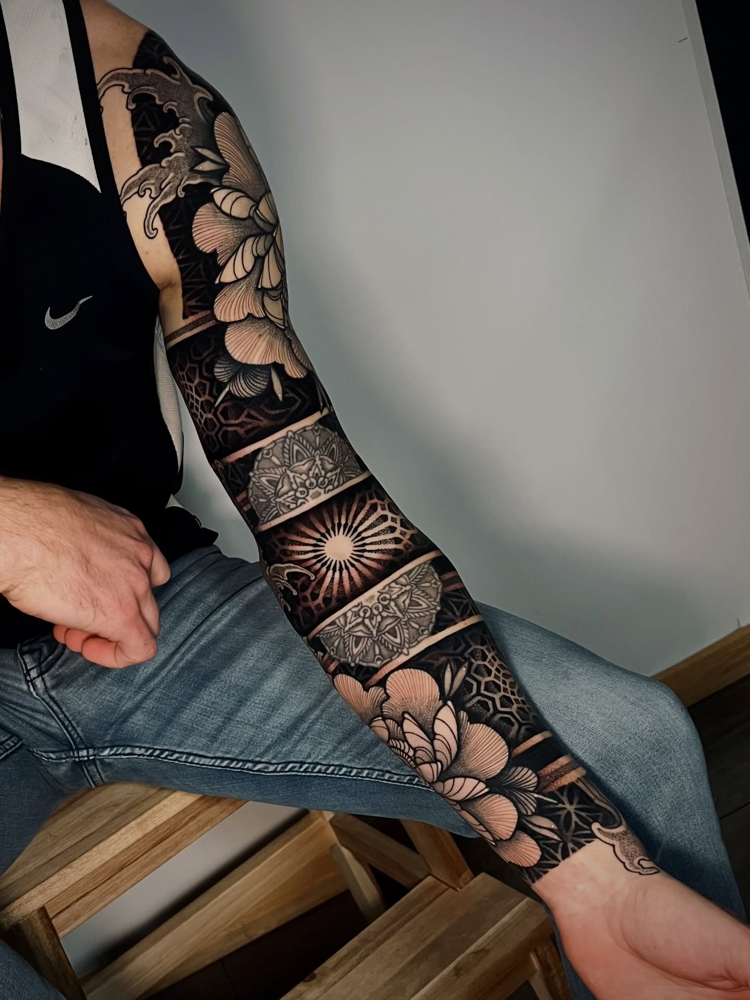

Clément Berdah didn't arrive at geometric tattooing through the usual path. After four years working in architecture — designing buildings, not inking skin — he felt a pull he couldn't ignore. He'd been drawing mandalas and dotwork patterns since his architecture career as a form of meditation. When his last contract ended, he took the leap. Found an apprenticeship. And from day one, he had a clear direction: ornamental, geometric, something ordered.
Now based in Rennes, Brittany, he's one of France's most distinctive voices in the geometric scene. We sat down with him to talk about the transition, the tension between precision and organic expression, and what it means to build a style from scratch.
Follow @monsieur_berdah on Instagram.
The Interview
You've been at it for a while now. How did you first get into tattoo, and when did shape up? Was there a moment when geometry became your natural way of working?
After getting a degree in architecture and working in the field for four years, I felt a real need for change. Tattooing had been calling me for a long time — even before I started, I was already drawing mandalas and dotwork patterns as a form of meditation, especially during the harder periods of my architecture career. When my last contract ended, I decided to take the leap. I reached out to shops and managed to find an apprenticeship. From the start, I had a clear direction: ornamental, geometric, something ordered. That prior practice with dotwork on paper allowed me to become relatively quickly efficient and productive in this style once I started tattooing. I still began with the fundamentals — linework, shading, packing with some walkins — but I moved toward dotwork and geometric projects pretty fast.

France has one of the world's strongest geometric tattoo scenes. Where does Rennes fit into that?
France genuinely has a large and prolific geometric scene — I couldn't really explain why, but there's something particular about it here. What strikes me most is the goodwill between artists: we respect each other, there's a real sense of camaraderie. In Brittany, several of us share this specialty — I'm thinking of Nadoz Tattoo and Ben Gicqueau in particular — and we're friends. No active competition, just mutual support and sharing.
At a national level, we've already started a dynamic of getting together as geometric tattoo artists to exchange about our practices. We did it once and it was genuinely enriching — we all learned things, and it's always great to meet new people. We'd love to revive that. I think there's something real to build in that direction among French tattoo artists.
When did you shift into geometry work? Was it a natural evolution or a conscious pivot?
It was already something I wanted to do before I even started tattooing, and I was able to move toward geometric work fairly quickly. But obviously, I didn't have my current style from day one — and that's a good thing. I'm fully aware that it will keep evolving over time, shaped by my interests, my discoveries, and my clients too. Style evolves — and I have my own theory about that.
I don't believe style is something you acquire all at once, like unlocking a new level. It's something that builds progressively, through an accumulation of small tricks picked up along the way: a client request that leads you to explore something new, a discovery, sometimes even a mistake you manage to recover. Gradually, you piece these elements together and build something coherent that feels like you and that you enjoy using. To me, that's really what style is — a patient accumulation of small things gathered over time.
Where do you find your influences?
It's hard to say exactly where the influences come from. Mostly from my travels and what surrounds me — nature, geometric patterns found in the city, all kinds of things that enter the mind unconsciously and come back out one way or another. I particularly enjoy working with motifs that already carry an existing symbolism. The Flower of Life, for example, is my favorite — the ultimate creation motif. I actually used it as the basis for my logo. What fascinates me is seeing elements of sacred geometry appear all over the world, in eras when people couldn't travel. There must be something deeper to all of this, and I enjoy letting myself be carried by that idea.
But above all, what drives me is the ornamental side of things. More than the symbolism itself, I love using these motifs to adapt as closely as possible to the body and bring something aesthetic, something decorative.

How do you approach mapping a full sleeve or large-scale piece?
For me, what comes first in any composition is the flow and the adaptation to the person's morphology. Following the curves of the body, making sure the tattoo deforms naturally with movement, seeing the piece come alive — that's what interests me first. The choice of elements, mandalas or patterns, comes second.
I always work freehand at the start, to find the movement and lay down the structure — the backbone of the project, so to speak. That's also how I approach all the floral parts, directly freehand on the body. Once that flow is found and tattooed, I build the composition in layers: I place the foreground first, then the middle ground, then the background, and so on. This is the approach that suits me best — the one through which I create most naturally and enjoy myself the most.
Your linework and dot gradients — what's your technical approach? Specific machine setups?
It varies quite a bit. I use different machines depending on what I need — coils, Dan Kubins, or pen-style rotaries. But for practicality, I tend to come back to the pen. Right now, I'm really enjoying the Bishop Wand Packer.

Working across different body types and placements, what's the most challenging surface you've worked with?
Generally speaking, in my opinion, the most difficult surfaces to work on are the ones that are the most painful for clients. And usually, those are also the most technically demanding. The throat or the ribs are good examples.
The client relationship in geometric work requires a lot of trust. How do you handle the consultation?
Before starting a project, I like to meet people in person if possible, or over video call. We talk through the project, align on the elements, references, and ideas. I sometimes propose predefined projects — full sleeves, backs, or chests for example — which we can then adapt during the consultation.
For custom projects, I like clients to bring references from my own work — things they like, things they don't. I feel like I have several styles within my style, so having some direction from the client helps. Sometimes they bring references from outside my work — I can always use those as inspiration. I find that working with clients' input leads to new things you wouldn't necessarily have come up with on your own.
In any case, when we meet in person, I like to start by picking up the markers and drawing directly on the body. It helps me think, and it also helps the client visualize the general direction of the piece.

Any memorable convention experiences or international guest spots?
The one that comes to mind immediately is the Geometrip convention in Ancona, Italy. I did it last year and I'm going back this year. It's truly incredible — so many artists of such a high level all in one place. It's both extremely inspiring and extremely humbling at the same time, when you see what's being done around you. Being able to meet these people and talk about our craft — that's something I always find amazing.
What's the tension between precision and imperfection in your work?
In my compositions, I enjoy working organic flows into the structures, and bringing in the organic through floral elements — which introduces a certain irregularity. More and more, I'm also integrating elements closer to Japanese tattooing, like decorative background work, which adds its own kind of organic shapes that I appreciate. All of this in contrast with more precise, geometric elements — that tension between the two is something I actively look for.
On a technical point of view, even though I always try to do my best, it took me time to let go and stop being too hard on myself when things weren't as perfect as I'd hoped. However, that dissatisfaction is part of a constant desire to evolve and improve — and I think that's the very essence of tattooing.

About the Artist
Clément Berdah is a geometric and ornamental tattoo artist based in Rennes, Brittany, France. With a background in architecture, he brings structural precision and an understanding of sacred geometry to every piece. His work balances dotwork, mandalas, and freehand flow with organic floral elements, creating compositions that follow the body's natural curves.
He frequently attends the Geometrip convention in Ancona, Italy, and is part of a growing network of French geometric tattoo artists advocating for community and collaboration over competition.
Follow Clément:
- Instagram: @monsieur_berdah
- Facebook: @MonsieurBerdah
- Booking: Via DM in French, German, or English
Interview conducted by OMF Geometry for OMF Geometry Magazine Issue 001 — Fall 2026.
This is one of 6-8 artist interviews featured in our inaugural bi-annual print + digital publication.
omfgeometry.com · @omfgeometry